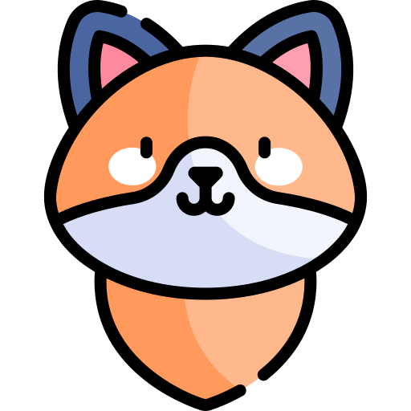

Animals
Animals found in the Gwichʼin Settlement Area
| Term | Translation | Audio |
|---|---|---|
| a beaver dam | tsee nı̀nii’òl | |
| bear | shoh | |
| beaver | tsèe’ | |
| beaver lodge | tsee kàn | |
| black bear | shoh | |
| black bear cub | shoh gii | |
| black bear sow | shoh tr’ik | |
| brown bear | shih tsoo | |
| calf moose | dı̀tsik | |
| caribou | vàdzaih | |
| caribou calf | igii | |
| caribou cow | vàdzaih tr’ik | |
| cow moose | dizhyuu | |
| dog | łaii | |
| dog | łaii | |
| dog harness | łaii tł’yàa’ | |
| fox | neegoo | |
| fox | neegoo | |
| grizzly bear | shih | |
| ground hog | vihshyuu | |
| I see | nił’ii | |
| lynx | niinjii | |
| marten | tsuk | |
| mink | chihthee | |
| moose | dinjik | |
| moose | dı̀njik | |
| moose tracks | dı̀njik k’ih | |
| mountain squirrel | tthaa | |
| mouse | daatsoo | |
| muskrat | dzan | |
| muskrat pushup | dzan kàn | |
| non migratory caribou | vanajàatanh | |
| otter | tryuh | |
| porcupine | ts’it | |
| rabbit | geh | |
| rabbit | geh | |
| squirrel | dlak | |
| squirrel | dlak | |
| weasel | dhivii | |
| wolf | zhòh | |
| wolverine | nèhtryùh |